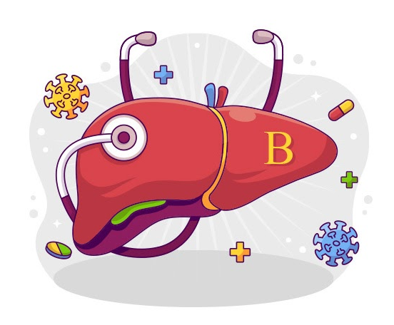

@@include('header.htm')
@@include('blocks/navigation-1.htm')
@@include('blocks/specialized-clinic-header.htm',{"title": "บริการทางการแพทย์",
"text":"นอกจากตรวจวินิจฉัยรักษาผู้ป่วยเรายังมีบริการอื่นๆอีกมากมาย","Url":"images/services/img-Medical-Services-Top-Banner.jpg"})
<section class="section-container pt-5">
    <div class="container">

        <div class="row">
            <div class="col-lg-9 col-xl-9 col-md-8 col-12 article-warper">
              <div class="row">
                <h4 class="text-muted">วันพฤหัสบดีที่ 14 กุมภาพันธ์ พ.ศ. 2567</h4>
                <div class="card col-12">
                    <div class="card-body">
                 
                        <h2 class="card-title">ไวรัสตับอักเสบบี อันตรายที่ป้องกันได้</h2>
                       <div class="row">
                            <div class="col-12 d-flex justify-content-center">
                                
                            </div>
                           
                       </div>
                       <div class="row">
                        <div class="col-12 article-block">
                            ไวรัสตับอักเสบบีสามารถทําให้เกิดการอักเสบของตับแบบเฉียบพลันหรือแบบเรื้อรังได้ไวรัสตับอักเสบบีเป็นสาเหตุ
                                ของโรคตับแข็งและมะเร็งตับที่สําคัณของโลก <br>
                                <h3 class="text-success pt-3 pb-3">โรคไวรัสตับอักเสบบีและชีมีความสําคัณอย่างไร</h3><br>
                                ไวรัสตับอักเสบมี5ชนิดประกอบด้วยไวรัสตับอักเสบเอบีซีดีและอีโดยไวรัสที่เป็นปบัญหาสําคัญณในบ้านเราได้แก่
                                ไวรัสตับอักเสบบีและชีเนื่องจากไวรัสทั้งสองชนิดทําให้เกิดตับอักเสบเรื้อรังตับแข็งและบีมะเร็งตับตามมาซึ่งเป็น
                                สาเหตุสําคัญที่ทําให้ผู้ป่วยเสียชีวิต <br><br>

                                ในประเทศไทยคาดว่ามีผู้ติดเชื้อไวร์สตับอักเสบบีประมาณร้อยละ5ของประชากรหรือประมาณ3ล้านคนส่วนผู้ที่ติด
                                เชื้อไวรัสตับอักเสบซีมีประมานร้อยละ1-2ของประชากรหรือประมาน1ลส้านคน

                                <h3 class="text-success pt-3 pb-3">ไวรัสตับอักเสบบี</h3><br>

                                ในบ้านเราการติดเชื้อไวรัสตับอักเสบบีส่วนใหญ่เกิดขึ้นตั้งแต่วัยเด็กพบว่าช่วง10-15ปีแรกจะมีปริมาณไวรัสสูงบมาก4
                                แต่ตับยังไม่อักเสบเพราะเมบ็ดเลือดขาวยังไม่ทราบว่ามีไวรัสอยู่ในร่างกายจนเข้าสู่วัยรุ่นเมื่อเม็ดเลือดขาวเริ่มตรวจพบก
                                และทําสลายเซลล์ตับที่มีไวรัสอยู่จึงทําให้มีไวรัสตับอักเสบเกิดขึ้นผู้ปวยบางคนอาจมีอาการของภาวะตับอักเสบเฉียบ.
                                พลันได้แก่อ่อนเพลียคลื่นโส้เจ็บใต้ชายโครงขาวมีไข้ตําตาเหลืองตัวเหลืองปัสสาวะมีสีเหลืองเข้มในผู้ที่มีภูมิ.
                                ต้านทานแข็งแรงพอจะสามารถควบคุมไวรัสได้บางรายสามารถกําจัดไวรัสได้หมดการอักเสบก็จะลดลงอาการต่างๆ.
                                จะค่อยๆดีขึ้นจนเป็นปกติในทางกลับกันในผู้ที่มีภูมิต้านทานไม่แข็งแรงพอไวรัสที่เหลืออยู่มากก็จะก่อให้เกิดการอัก
                                เสบเรื้อรังและบมีพังผิดเกิดขึ้นมาแทนที่ซึ่งในระยะนี้ผู้ปวยมักไม่มีอาการนานวันเข้าก็จะมีภาวะตับแข็งและมะเร็งตับเกิดก
                                ขึ้นซึ่งพบประมาณร้อยละ15-40ของผู้ปวยที่มีตับอักเสบเรื้อรัง
                                <br>  <br>
                                ผู้ติดเชื้อไวรัสตับอักเสบบีมีความเสี่ยงในการเกิดมะเร็งตับเพิ่มขึ้นโดยเฉลี่ย100เท่าและจะมีความเสี่ยงมากขึ้นอีก

                                หากมีปัจจัยส่งเสริมอื่นๆร่วมด้วยได้แก่เพศชายมีโอกาสเป็นมากกว่าเพศหญิงปัจจัยทางกรรมพันธุ์พบว่าผู้ที่มีคน
                                ในครอบครัวเป็นมะเร็งตับมีโอกาสมากกว่าคนอื่นๆมีโรคตับอื่นๆร่วมด้วยเช่นการดื่มสุราการติดเชื้อไวรัสตับอักเสบ
                                ซีการติดเชื้อไวรัสตับอักเสบดีจะทําให้ตับมีการอักเสบมากขึ้นการได้รับสารก่อมะเร็งโดยเฉพาะสารอะฟลาท็อกชิน

                                (ลกิล!03ตท)ซึ่งสร้างจากเชื้อราที่มักพบในธัณญพีชที่เก็บไว้นานๆหรือในที่ชิ้นโดยเฉพาะถั่วลิสงถั่วปนเพริกป่นสารอะ
                                ฟลสาท็อกซินนี้ทนความร้อนเป็นได้ดีไม่ถูกทําลายด้วยการหุงตัม
                        </div>
                       </div>

                       <div class="row pt-5">
                        <div  class="col-12 d-flex flex-row">
                            <p>
            
                                ป้ายกำกับ :   <a class="txt-secondary">โรคตับ</a>  <a class="txt-secondary">อายุรกรรม</a> <a class="txt-secondary">การป้องกันโรค</a>
                            </p>
                            <div class="d-flex flex-row pl-3">
                                
                                
                                
                                
                                
                            </div>
                          
                        </div>
                           
                       </div>
                     
                    </div>
                  </div>
              </div>
              <div class="row pt-5">
                <div class="col-2 col-md-4 text-left pr-5">
                  
                    <a class="atricle-paging d-none d-lg-block">< บทความใหม่กว่า</a>
                    <a class="atricle-paging b-block d-lg-none"><</a>
                </div>
                <div class="col-8 col-md-4 text-center pr-5">
                    <a href="./article.html" class="atricle-paging">หน้าแรกบทความ</a>
                </div>
                <div class="text-right col-2 col-md-4 pl-5">
                    <a class="atricle-paging d-none d-lg-block">บทความเก่ากว่า ></a>
                    <a class="atricle-paging b-block d-lg-none">></a>
                </div>
              </div>
            </div>
            <div class="d-none d-md-block col-md-4 col-lg-3 col-xl-3 article-warper">
                <h4 class="text-muted">บทความยอดนิยม</h4>
                @@loop('articles/article-small.htm',[
                {"title":"คุณมีภาวะ...ขาดวิตามินดี หรือไม่?","img":"./images/article2/left-block1.png","desc":"ระดับวิตามินดีในเลือด 25(OH)D น้อยกว่า 20 ng/mL ถือว่ามีภาวะขาด..."}
                , {"title":"ทำไม ต้องตรวจความหนาแน่นของมวลกระดูก?","img":"./images/article2/left-block2.png","desc":"จะทำให้ทราบได้ว่า กระดูกของเราแข็งแรงมากน้อยแค่ไหน..."}
                , {"title":"การตรวจหัวใจด้วยเครื่องสะท้อนเสียงความถี่สูง (ECHOCARDIOGRAM)","img":"./images/article2/left-block3.png","desc":"คือการส่งคลื่นเสียงที่ปลอดภัยเข้าไปยังบริเวณทรวงอก จากนั้น..."}
                ])

                <div class="article-item-sx">
                    <div class="card border-0">
                       
                        <div class="card-body article-block">
                            <h3 class="text-muted card-title">ป้ายกำกับ</h3>
                            <div class="txt-secondary suggest-tag d-flex flex-wrap">
                                <a>วัคซีนไข้หวัดใหญ่</a> <a>ไขมันอุดตัน</a> <a data-text-size="medium">ไข้หวัดใหญ่</a>
                                <a>โรคตับ</a> <a data-text-size="large">หัวใจ</a> <a>อายุรกรรม</a> <a>การป้องกันโรค</a>
                                <a>ไขมันในเลือดสูง</a> <a data-text-size="large">เส้นเลือดตีบ</a> <a data-text-size="medium">วัคซีน</a>
                                <a>ตรวจสมรรถภาพหัวใจ</a> <a data-text-size="large">ออกกำลังกาย</a>
                                <a data-text-size="medium">การตรวจสุขภาพ</a> <a>อาชีวเวชศาสตร</a>
                            </div>
                           
                        </div>
                      </div>
                </div>


                <div class="article-item-sx">
                    <div class="card border-0">
                        
                     
                      </div>
                </div>
                <div class="article-item-sx">
                    <div class="card border-0">
                        
                     
                      </div>
                </div>
                

            </div>

 

        </div>

    </div>
</section>
@@include('footer.htm')
 
  